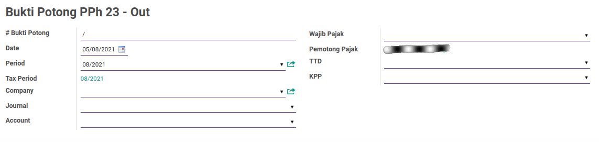
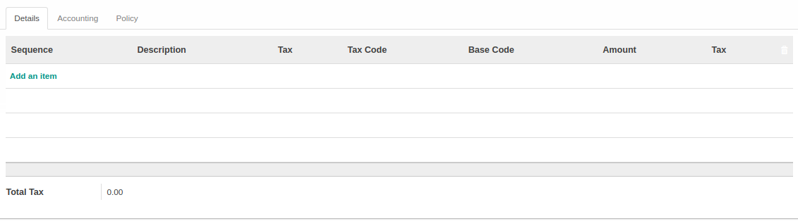
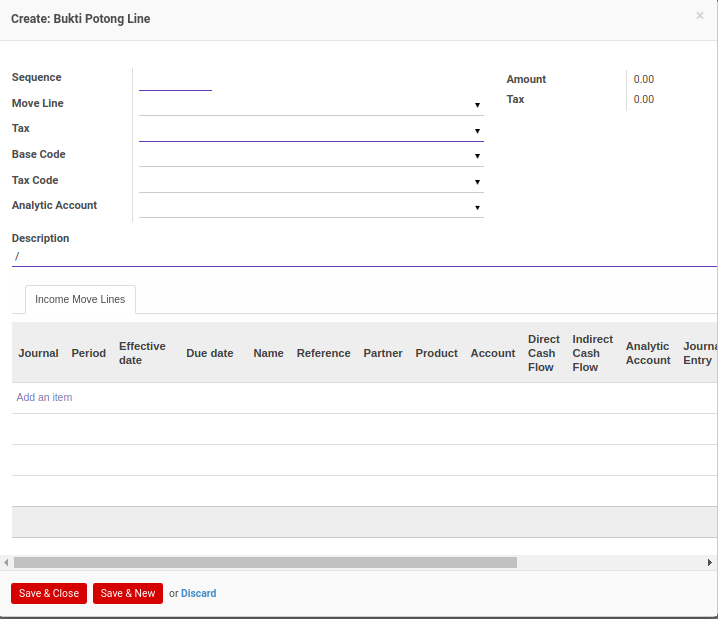
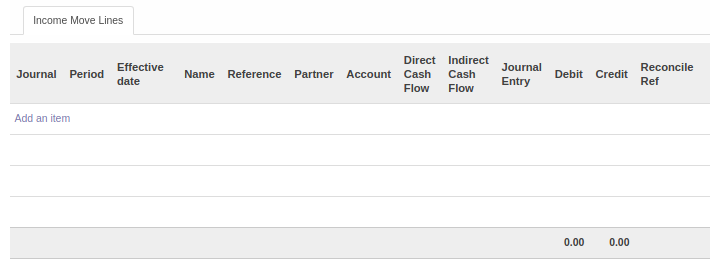
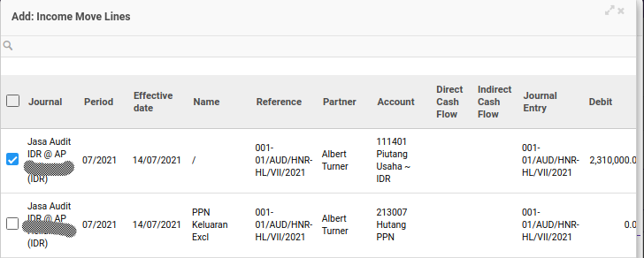
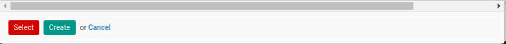
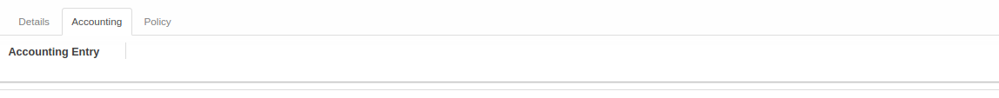
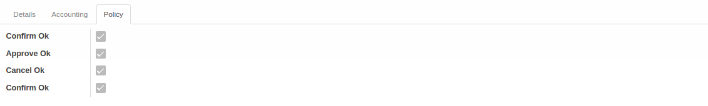

Pejelasan Bukti Potong PPh 23 Keluar
Informasi pada Bukti Potong PPh 23 Keluar dibagi menjadi beberapa bagian, yaitu:
HEADER

# Bukti Potong
Nomor bukti potong.
Date
Tanggal.
Period
Periode.
Tax Period
Periode pajak.
Company
Nama perusahaan.
Journal
Jurnal.
Account
Akun.
Wajib Pajak
Nama wajib pajak.
Pemotong Pajak
Nama pemotong pajak.
TTD
Nama penandatangan bukti potong.
KPP
Nama Kantor Pelayanan Pajak.
TAB DETAILS

TABEL Detail Bukti Potong
Tabel detail bukti potong pajak.
Pop Up Bukti Potong Line saat add an item diklik.

Sequence
Nomor urut.
Move Line
to do.
Tax
Jenis pajak.
Base Code
to do.
Tax Code
to do.
Analytic Account
Akun analitik yang digunakan.
Description
Deskripsi.
Amount
Jumlah.
Tax
Nilai pajak.
TAB INCOME MOVE LINES

TABEL Income Move Line
to do.
Pop Up Income Move Line saat add an item diklik.
 
Journal
Jurnal.
Period
Periode.
Effective Date
Tanggal efektif.
Name
Nama.
Reference
Referensi.
Partner
Nama partner.
Account
Nama akun.
Direct Cash Flow
Direct cash flow.
Indirect Cash Flow
Indirect cash flow.
Journal Entry
Entri Jurnal.
Debit
Jumlah Debit.
Credit
Jumlah Kredit.
Reconcile Ref
Referensi rekonsiliasi.
TAB ACCOUNTING

Accounting Entry
to do.
TAB POLICY

Confirm Ok
Berhak/tidaknya user aktif untuk dapat mengkonfirmasi bukti potong PPh 23 keluar.
Approve Ok
Berhak/tidaknya user aktif untuk dapat menyetujui bukti potong PPh 23 keluar.
Cancel Ok
Berhak/tidaknya user aktif untuk dapat membatalkan bukti potong PPh 23 keluar.